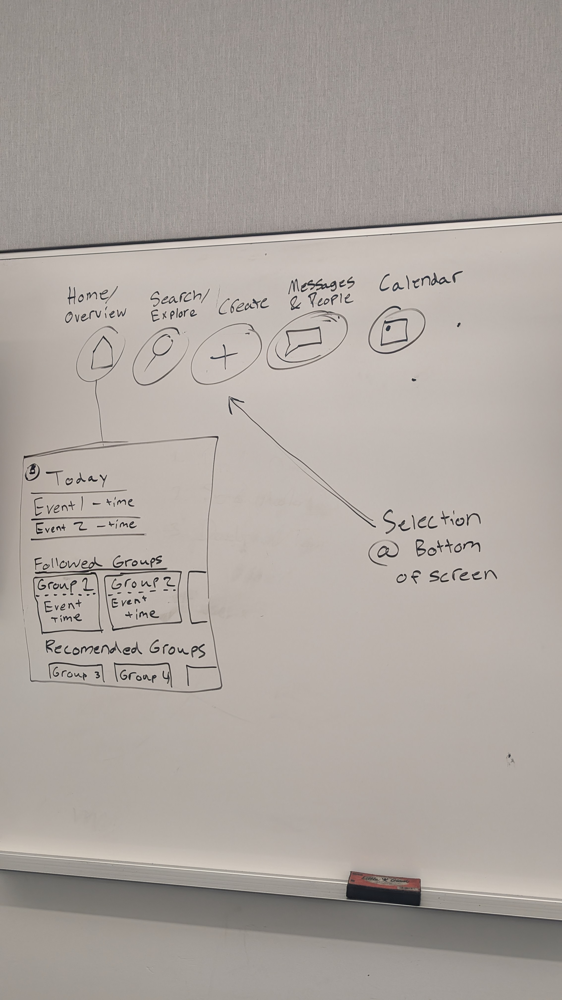
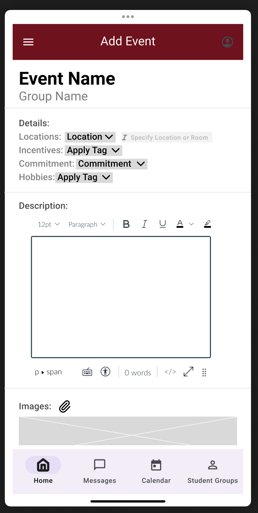
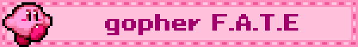
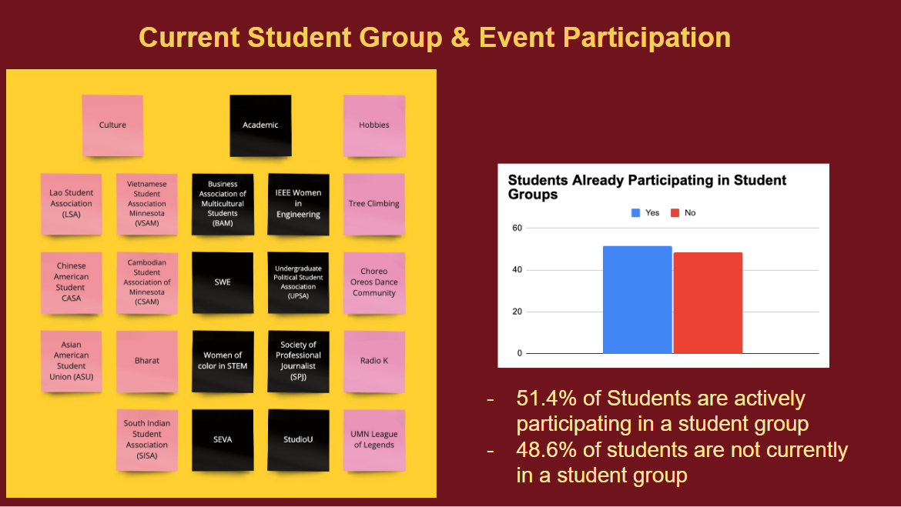
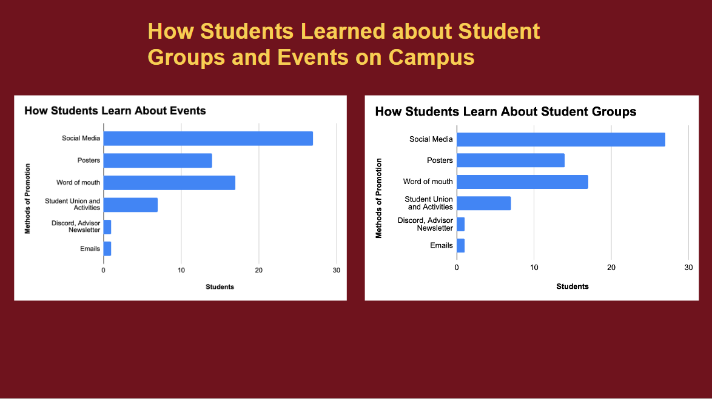
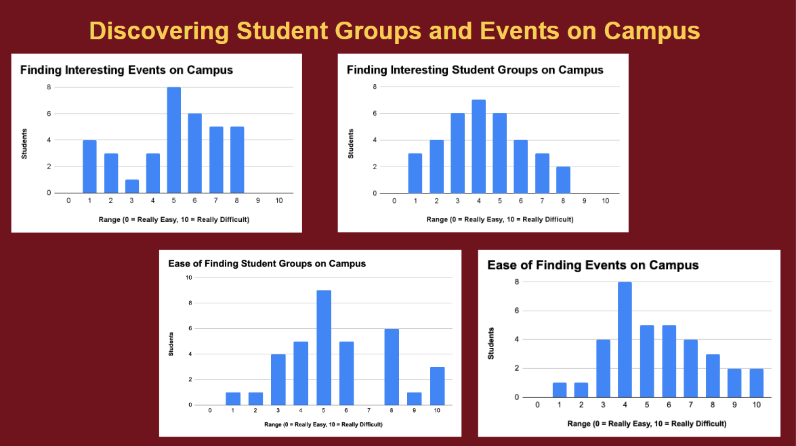
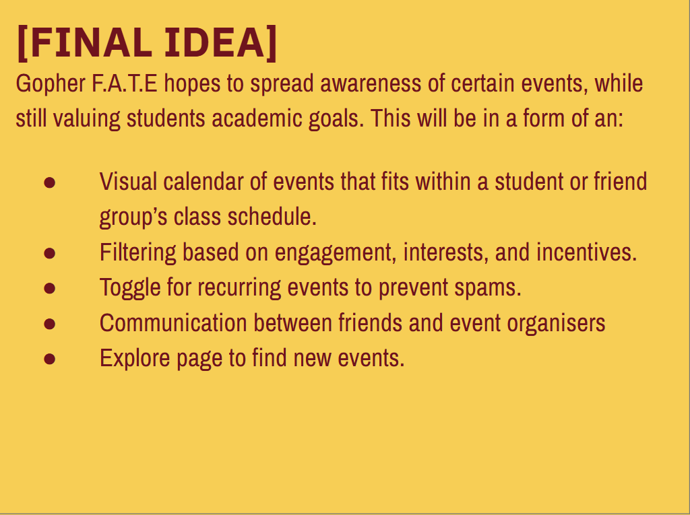

gopher F.A.T.E was a semester-long group project for my user interface design, prototyping, and evaluation class.
i worked on a team with 5 other students to develop a user interface for an app that we created called gopher F.A.T.E.
our project was broken up into 3 milestones.
our objective was to create a solution for a problem that is not well-solved. we decided on tackling the issue of finding events and student groups.
as college students, we were painfully aware of how difficult it is to fit them into our busy schedules.
finding information for all events on campus requires searching many different sources of information, and we wanted to simplify that process.
during this first milestone, my team conducted 6 different interviews with members within our target audience. these were all students who
went to UMN, and also engaged in frequent student activies. we also used surveys to further gather information and data for our research.
we drafted up interview questions, created a user research protocol for our group memebrs to follow, and made sure to have user research consent forms.



using this data, we decided to create a user interface for an app that helps students track events and student groups while seeing how they directly
fit into students' schedules.

in this milestone, we created our first low-fidelity prototype. we started with a draft prototype, which was created using figma, paper, and whiteboard
drawing sessions.


after feedback from our professor and TAs, we used cognitive walkthroughs and heuristic evaluations to improve our prototype.
our final milestone consisted of user testing. we asked 6 different university students to test our prototype using think-aloud usability tasks to see where problems
lied in our prototype. after gathering our data, we created a list of improvements and changes we could make to our prototype based on user testing.